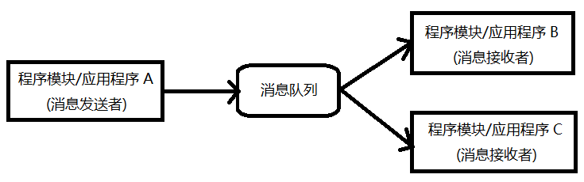

- 00 开篇词 从“小工”到“专家”，我的软件测试修炼之道.md.html
- 01 你真的懂测试吗？从“用户登录”测试谈起.md.html
- 02 如何设计一个“好的”测试用例？.md.html
- 03 什么是单元测试？如何做好单元测试？.md.html
- 04 为什么要做自动化测试？什么样的项目适合做自动化测试？.md.html
- 05 你知道软件开发各阶段都有哪些自动化测试技术吗？.md.html
- 06 你真的懂测试覆盖率吗？.md.html
- 07 如何高效填写软件缺陷报告？.md.html
- 08 以终为始，如何才能做好测试计划？.md.html
- 09 软件测试工程师的核心竞争力是什么？.md.html
- 10 软件测试工程师需要掌握的非测试知识有哪些？.md.html
- 11 互联网产品的测试策略应该如何设计？.md.html
- 12 从0到1：你的第一个GUI自动化测试.md.html
- 13 效率为王：脚本与数据的解耦 + Page Object模型.md.html
- 14 更接近业务的抽象：让自动化测试脚本更好地描述业务.md.html
- 15 过不了的坎：聊聊GUI自动化过程中的测试数据.md.html
- 16 脑洞大开：GUI测试还能这么玩（Page Code Gen + Data Gen + Headless）？.md.html
- 17 精益求精：聊聊提高GUI测试稳定性的关键技术.md.html
- 18 眼前一亮：带你玩转GUI自动化的测试报告.md.html
- 19 真实的战场：如何在大型项目中设计GUI自动化测试策略.md.html
- 20 与时俱进：浅谈移动应用测试方法与思路.md.html
- 21 移动测试神器：带你玩转Appium.md.html
- 22 从0到1：API测试怎么做？常用API测试工具简介.md.html
- 23 知其然知其所以然：聊聊API自动化测试框架的前世今生.md.html
- 24 紧跟时代步伐：微服务模式下API测试要怎么做？.md.html
- 25 不破不立：掌握代码级测试的基本理念与方法.md.html
- 26 深入浅出之静态测试方法.md.html
- 27 深入浅出之动态测试方法.md.html
- 28 带你一起解读不同视角的软件性能与性能指标.md.html
- 29 聊聊性能测试的基本方法与应用领域.md.html
- 30 工欲善其事必先利其器：后端性能测试工具原理与行业常用工具简介.md.html
- 31 工欲善其事必先利其器：前端性能测试工具原理与行业常用工具简介.md.html
- 32 无实例无真相：基于LoadRunner实现企业级服务器端性能测试的实践（上）.md.html
- 33 无实例无真相：基于LoadRunner实现企业级服务器端性能测试的实践（下）.md.html
- 34 站在巨人的肩膀：企业级实际性能测试案例与经验分享.md.html
- 35 如何准备测试数据？.md.html
- 36 浅谈测试数据的痛点.md.html
- 37 测试数据的“银弹”- 统一测试数据平台（上）.md.html
- 38 测试数据的“银弹”- 统一测试数据平台（下）.md.html
- 39 从小作坊到工厂：什么是Selenium Grid？如何搭建Selenium Grid？.md.html
- 40 从小工到专家：聊聊测试执行环境的架构设计（上）.md.html
- 41 从小工到专家：聊聊测试执行环境的架构设计（下）.md.html
- 42 实战：大型全球化电商的测试基础架构设计.md.html
- 43 发挥人的潜能：探索式测试.md.html
- 44 测试先行：测试驱动开发(TDD).md.html
- 45 打蛇打七寸：精准测试.md.html
- 46 安全第一：渗透测试.md.html
- 47 用机器设计测试用例：基于模型的测试.md.html
- 48 优秀的测试工程师为什么要懂大型网站的架构设计？.md.html
- 49 深入浅出网站高性能架构设计.md.html
- 50 深入浅出网站高可用架构设计.md.html
- 51 深入浅出网站伸缩性架构设计.md.html
- 52 深入浅出网站可扩展性架构设计.md.html
- 测试专栏特别放送 浅谈全链路压测.md.html
- 测试专栏特别放送 答疑解惑第一期.md.html
- 测试专栏特别放送 答疑解惑第七期.md.html
- 测试专栏特别放送 答疑解惑第三期.md.html
- 测试专栏特别放送 答疑解惑第二期.md.html
- 测试专栏特别放送 答疑解惑第五期.md.html
- 测试专栏特别放送 答疑解惑第六期.md.html
- 测试专栏特别放送 答疑解惑第四期.md.html
- 结束语 不是结束，而是开始.md.html
- 捐赠
52 深入浅出网站可扩展性架构设计
你好，我是茹炳晟。今天我和你分享的主题是：深入浅出网站可扩展性架构设计。
在上一篇文章中，我从可伸缩性和可扩展性对应的英文术语的角度，和你分享了这两个概念的差异，并且和你详细介绍了网站的可伸缩性架构设计主要包括的内容，以及从测试人员的视角需要关注哪些点进行针对性的测试。
所以，在今天这篇文章，也是这个专栏最后一篇正文中，我会再和你详细讨论网站的可扩展性（Extensibility）架构设计。这里，我先带你一起回顾一下可扩展性的定义：
可扩展性，指的是网站的架构设计能够快速适应需求的变化，当需要增加新的功能实现时，对原有架构不需要做修改或者做很少的修改就能够快速实现新的业务需求。
从这个定义中，我们很容易就可以得出衡量网站可扩展性设计优秀与否的主要标准，就是增加新功能的时候对原有系统的影响是否足够小。
当今的商业环境决定了网站新功能开发与上线的时间周期必须非常短，如果每次添加新功能，都需要对原有系统进行大量修改，从而还会牵连出更多测试工作的话，那么你的竞争力就会被大打折扣，用一个不太恰当的比喻就是直接“输在了起跑线上”。
其实，你我都清楚添加新功能时必须要对系统进行大幅度修改的原因是，系统架构设计上的耦合性。那么，有什么“好的”架构设计方案可以使得我们添加新功能的时候，只需对原有系统做少量修改，甚至完全不需要修改吗？
咋一听起来，这就像“又要马儿跑，又要马儿不吃草”。但，其实不是的。我们往往可以通过架构上的设计优化来达到事半功倍的效果。
为了帮助你理解可扩展性，我先和你分享一个案例。
网站可扩展性架构设计的案例
假设你现在为了实时监控服务器的健康状态，需要为网站添加一个实时收集服务器端监控指标的功能，此时最直接的方案就是用代码去实现对每一个监控指标的收集，然后将所有的这些代码集成在一起形成一个可执行程序运行在服务器端后台。
这样的设计固然简单直接，而且也能实现所有的功能需求（收集各种监控指标），但是当你需要收集一个新的监控指标时，就不得不更新整个可执行程序了。如果你需要经常添加新的监控指标的话，那么这样的设计就不能满足可扩展性的要求了。
我们希望的是，当增加新的监控指标的时候，原有的系统不需要做任何修改，甚至可以做到实时添加全新的监控指标。为了达到这个目的，现有的其他方案都不能满足或者不容易满足这个要求，所以我们就必须要在架构设计上做些文章了。
我们可以把对每一个监控指标的代码实现，直接打包成一个个的可执行监控子程序，比如收集CPU使用率的程序A、收集内存使用率的程序B等，然后运行在服务器后台的监控主程序通过调用这些子程序，比如程序A和B，来实现所有的监控需求。
这时，再增加新的监控指标时，原有系统就不需要做任何改动，只需要独立实现新的监控子程序，然后以配置文件的形式“告诉”主程序新添加的监控子程序的路径即可。这也就实现了系统的可扩展性。
接下来，我们再一起回到网站的可扩展性设计上来。其实，提升网站可扩展性性的核心，就是降低系统各个模块和组件之间的耦合。耦合程度越低，各个模块和组件的复用可能性就越大，系统的可扩展性也会越好。
从现在来看，实现网站可扩展性架构的主要技术手段包括事件驱动架构和微服务架构。
微服务架构从根本上改变了网站的架构形式，带来可扩展性便利的同时，还带来了很多其他优秀的特性。在微服务架构下，一个大型复杂软件系统不再由一个单体组成，而是由一系列的微服务组成。其中每个微服务可被独立开发和部署，各个微服务之间是松耦合的。每个微服务仅专注于完成一件任务，并要很好地完成该任务。
在微服务架构下，当网站需要增加新功能时，我们除了可以添加新的业务逻辑外，还可以利用原本已经存在的微服务来构建新的功能。由于服务和服务之间是相互隔离的，并且单个服务还可以被其他多个服务复用，所以系统的可扩展性会比较好。
而关于微服务架构下，测试人员应该关注的测试点，建议你参考专栏的第24篇文章《紧跟时代步伐：微服务模式下API测试要怎么做？》中的相关内容。如果还有哪些不清楚的，你可以再自行查找更多的相关资料，或者给我留言一起讨论。
所以，在今天这篇文章中，我会和你重点分享事件驱动架构是如何提升网站的可扩展性的。
而事件驱动架构的落地靠的是消息队列，所以我会同时和你分享消息队列的内容。最后，我会再和你分享引入了消息队列后，从测试人员的角度来看会有哪些需要额外关注的点。
事件驱动架构与消息队列
事件驱动架构设计的出发点源于这样一个事实：如果系统的各个模块之间的协作不是通过直接的调用关系来实现的，那么系统的可扩展性就一定会更好。问题是，系统的各个模块间的协作如何才能不基于调用关系呢？
答案就是事件消息。系统各个模块之间只是通过消息队列来传输事件消息，而各模块之间并没有直接的调用关系、保持松散的耦合关系。
事件驱动架构最典型的一个应用就是操作系统中常见的生产者和消费者模式，将其应用到网站设计中就是分布式消息队列。
分布式消息队列同样采用了生产者和消费者模式：
- 消息的发送者负责将消息发布到消息队列中，也就是“生产者”；
- 另外，系统中会有一个或者多个消息接收者订阅消息，订阅目的是为了获取消息并进行处理，这里的消息订阅者其实就是“消费者”。消息接收者发现消息队列中有新的消息后，就会立马对其进行处理。
可以看到，在这种模式下，消息的发送者和接收者之间并没有任何直接的联系，是松耦合的。它们的协作是通过消息队列这个“中间人”进行的。消息的发送者将消息发送至消息队列后，就结束了对消息的处理，而消息的接收者只是从消息队列中获取消息进行后续的处理，并不需要知道这些消息从哪里来，因此可以很方便地实现高可扩展性。
所以，采用这种模式的话，当网站需要增加新功能的时候，只要增加对应的新模块，再由对此模块感兴趣的“消费者”进行订阅，就可以实现对原有系统功能的扩展了，而对原本的系统模块本身并没有影响。
此时，消息队列的架构如图1所示。

图1 消息队列的原理图
引入了消息队列后，我们不仅可以提高系统的可扩展性，还可以再一定程度上改善网站架构的高性能、高可用性和可伸缩性。
- 从性能方面来看，消息发送者不需要等接收者实际处理完成后才返回，也就是从原本的同步处理变成了异步处理，所以用户会感知到网站性能的提升。
- 从高可用方面来看，假如消息的接收者模块发生了短时间的故障，此时并不会影响消息发送者向消息队列中发送消息，等到消息接收者模块恢复后可以继续后续的处理，只要这段时间内消息队列本身没有被塞满而出现消息丢失的情况。从整体角度看，系统并不会感知到消息接收者模块曾经发生过短暂故障，也就相当于保证了系统的高可用。
- 从可伸缩性方面来看，消息队列的核心其实就是一个无状态的存储。所以，当系统需要能够保留更多的消息时，我们通过简单地增加存储空间就可以实现。尤其是，大规模的电商网站来更会将消息队列扩展成为分布式消息队列集群，来实现消息队列的可伸缩性。
引入消息队列后，测试人员需要额外关注的点
现在，你应该已经掌握了消息队列的基本原理，以及在网站架构中的用法。接下来，我们再一起看看消息队列对测试的影响，以及我们在测试时需要特别关注哪些点。
这里，我把测试人员需要额外关注的点，归纳为了以下几点：
从构建测试数据的角度来看，为了以解耦的方式测试系统的各个模块，我们就需要在消息队列中构造测试数据。这也是为什么很多互联网的自动化测试框架中都会集成有消息队列写入工具的主要原因。
从测试验证的角度来看，我们不仅需要验证模块的行为，还要验证模块在消息队列中的输出是否符合预期。为此，互联网的自动化测试框架中也都会集成消息队列的读取工具。
从测试设计的角度来看，我们需要考虑消息队列满、消息队列扩容等情况下系统功能是否符合设计预期。
除此之外，我们还需要考虑，某台消息队列服务器宕机的情况下，丢失消息的可恢复性以及新的消息不会继续发往宕机的服务器等等。
总结
在今天这篇文章中，我和你分享了网站架构知识中的最后一个内容：可扩展性。
可扩展性指的是网站的架构设计能够快速适应需求的变化，当需要增加新功能时，我们只要对原有架构进行少量修改，甚至不用修改就能快速实现新的业务需求。
从技术实现上来看，消息队列是实现可扩展性的重要技术手段之一。其基本核心原理是各模块之间不存在直接的调用关系，而是使用消息队列，通过生产者和消费者模式来实现模块间的协作，从而保持模块与模块间的松耦合关系。
引入消息队列后，测试数据的创建和测试结果的验证工作，都需要通过读写消息队列来完成。同时，我们还要考虑到消息队列满、消息队列扩容，以及消息队列服务器宕机情况下的系统功能验证。这几个点，就是测试人员需要额外关注的点了。
思考题
你在实际工作中接触过哪些种类的消息队列？在测试过程中，是否遇到过和消息队列有关的缺陷呢？
感谢你的收听，欢迎你给我留言一起讨论。
© 2019 - 2023 Liangliang Lee. Powered by gin and hexo-theme-book.